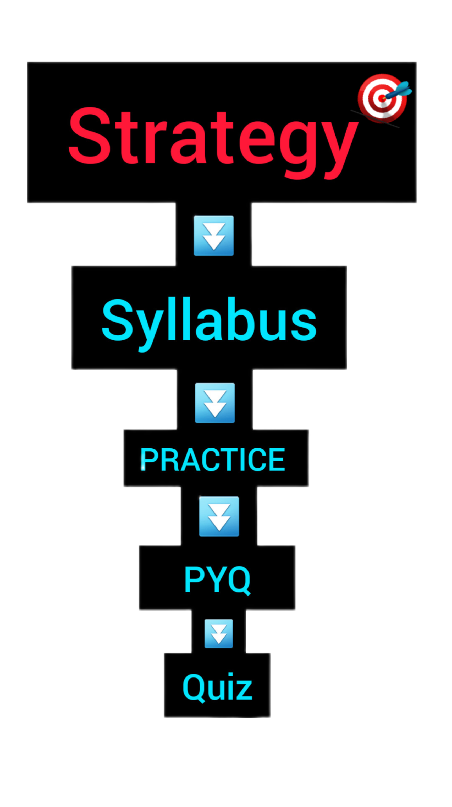

ABOUT AFCAT
AFCAT (Air Force Common Admission Test) is an entrance examination conducted by the Indian Air Force (IAF) to select officers for various branches in the IAF, including Flying Branch, Ground Duty (Technical), and Ground Duty (Non-Technical) branches. The exam is conducted twice a year.
Follow This Strategy Ladder.
Nationality: Candidates must be citizens of India.
Age Limit:
[1]. Flying Branch: 20 to 24 years as on the date of commencement of course (relaxable up to 26 years in case of candidates holding a valid and current Commercial Pilot License issued by DGCA).
[2]. Ground Duty (Technical/Non-Technical) Branch: 20 to 26 years as on the date of commencement of course.
[2]. Ground Duty (Technical/Non-Technical) Branch: 20 to 26 years as on the date of commencement of course.
Educational Qualifications:
[1]. Flying Branch: Graduation with a minimum of 60% marks in aggregate in any discipline with Physics and Mathematics at 10+2 level. Candidates must have passed Class 10+2 with a minimum of 60% marks in each subject.
[2]. Ground Duty (Technical) Branch-
(A). Aeronautical Engineer (Electronics): Candidates should have completed a minimum of four years of graduation or integrated post-graduation in Engineering/Technology in the relevant disciplines with a minimum of 60% marks.
(B). Aeronautical Engineer (Mechanical): Candidates should have completed a minimum of four years of graduation or integrated post-graduation in Engineering/Technology in the relevant disciplines with a minimum of 60% marks.
[3]. Ground Duty (Non-Technical) Branch-
(A). Administration and Logistics: Graduation in any discipline with a minimum of 60% marks.
(B). Accounts: B.Com degree with a minimum of 60% marks.
(C). Education: Post-graduation in any discipline with a minimum of 50% marks.
[2]. Ground Duty (Technical) Branch-
(A). Aeronautical Engineer (Electronics): Candidates should have completed a minimum of four years of graduation or integrated post-graduation in Engineering/Technology in the relevant disciplines with a minimum of 60% marks.
(B). Aeronautical Engineer (Mechanical): Candidates should have completed a minimum of four years of graduation or integrated post-graduation in Engineering/Technology in the relevant disciplines with a minimum of 60% marks.
[3]. Ground Duty (Non-Technical) Branch-
(A). Administration and Logistics: Graduation in any discipline with a minimum of 60% marks.
(B). Accounts: B.Com degree with a minimum of 60% marks.
(C). Education: Post-graduation in any discipline with a minimum of 50% marks.
Exam Pattern:
[1]AFCAT- The AFCAT exam consists of multiple-choice questions (MCQs) and is conducted online. The exam has four sections: General Awareness, Verbal Ability in English, Numerical Ability, and Reasoning and Military Aptitude Test. Each section consists of 25 questions carrying three marks each. There is a negative marking of one mark for each wrong answer. The total duration of the AFCAT exam is 2 hours.
[2] EKT (Engineering Knowledge Test): EKT is only applicable to candidates applying for the Ground Duty (Technical) branch. It is conducted immediately after the AFCAT exam. EKT consists of 50 questions with a total duration of 45 minutes. The syllabus for EKT is based on the respective engineering disciplines.
[2] EKT (Engineering Knowledge Test): EKT is only applicable to candidates applying for the Ground Duty (Technical) branch. It is conducted immediately after the AFCAT exam. EKT consists of 50 questions with a total duration of 45 minutes. The syllabus for EKT is based on the respective engineering disciplines.
Selection Process:
The selection process consists of the AFCAT exam, Air Force Selection Board (AFSB) Interview, medical examination, and document verification.
[1] AFCAT Exam: Candidates who qualify the AFCAT written exam are shortlisted for the next stage.
[2] AFSB Interview: Shortlisted candidates are called for the AFSB Interview, which includes various stages such as Officer Intelligence Rating Test, Psychological Test, Group Tests, and Personal Interview.
[3] Medical Examination: Candidates who pass the AFSB Interview are required to undergo a medical examination conducted by the Air Force Medical Authorities.
[4] Document Verification: The final selection is based on the candidate's performance in the AFCAT exam, AFSB Interview, and medical examination. The documents of selected candidates are verified before their final induction into the IAF.
[1] AFCAT Exam: Candidates who qualify the AFCAT written exam are shortlisted for the next stage.
[2] AFSB Interview: Shortlisted candidates are called for the AFSB Interview, which includes various stages such as Officer Intelligence Rating Test, Psychological Test, Group Tests, and Personal Interview.
[3] Medical Examination: Candidates who pass the AFSB Interview are required to undergo a medical examination conducted by the Air Force Medical Authorities.
[4] Document Verification: The final selection is based on the candidate's performance in the AFCAT exam, AFSB Interview, and medical examination. The documents of selected candidates are verified before their final induction into the IAF.
Syllabus of the AFCAT
1. English: Comprehension, Error Detection, Sentence Completion/Filling in of correct word, Synonyms, Antonyms and Testing of Vocabulary, Idioms and Phrases
2. General Awareness: History, Geography, Civics, Politics, Current Affairs, Environment, Basic Science, Defence, Art, Culture, Sports, etc
3. Numerical Ability: Decimal Fraction, Time and Work, Average, Profit & Loss, Percentage, Ratio & Proportion and Simple Interest, Time & Distance (Trains/Boats & Streams)
4. Reasoning and Military Aptitude Test: Verbal Skills and Spatial Ability. More...
1. English: Comprehension, Error Detection, Sentence Completion/Filling in of correct word, Synonyms, Antonyms and Testing of Vocabulary, Idioms and Phrases
2. General Awareness: History, Geography, Civics, Politics, Current Affairs, Environment, Basic Science, Defence, Art, Culture, Sports, etc
3. Numerical Ability: Decimal Fraction, Time and Work, Average, Profit & Loss, Percentage, Ratio & Proportion and Simple Interest, Time & Distance (Trains/Boats & Streams)
4. Reasoning and Military Aptitude Test: Verbal Skills and Spatial Ability. More...
IAF Career
PYQ
PRACTICE
QUIZ
BACK
written by
REDU